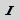
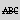

2.4.2. Pre-defined styles
Inline-styles
Following table lists the inline-styles that are pre-defined by Docmenta:
| Style-ID | Description |
|---|---|
| emphasis | The style with ID "emphasis" is applied to all elements which are marked as "emphasized" (using the  button; see Emphasis). |
| strong | The style with ID "strong" is applied to all elements which are marked as "strong" (using the |
| underline | The style with ID "underline" is applied to all elements which are marked as "underlined" (using the button; see Underline). |
| strike | The style with ID "strike" is applied to all elements which are marked as "strike-through" (using the  button; see Strikethrough). |
| link | The style with ID "link" is applied to all link elements (i.e. elements created with the |
| link_visited | If an inline-style with ID "link_visited" exists, then this style is applied to links which have already been visited by the user. The style "link_visited" is only supported for HTML output. |
| link_focus | If an inline-style with ID "link_focus" exists, then this style is applied to the link which currently has the input focus. The style "link_focus" is only supported for HTML output. |
| link_hover | If an inline-style with ID "link_hover" exists, then this style is applied to the link while the mouse-pointer is moved over the link. The style "link_hover" is only supported for HTML output. |
| link_active | If an inline-style with ID "link_active" exists, then this style is applied to the link which was last visited by the user. The style "link_active" is only supported for HTML output. |
| link_external | If an inline-style with ID "link_external" exists, then this style is applied to all external links (instead of the "link" style). This way it is possible to have different styles for internal and external links. Note: The style "link_external" is currently only supported for HTML output. |
| footnote | Text that is formatted with the inline-style "footnote" is rendered as footnote. See Section 1.13.7, “Creating footnotes” for an introduction on using footnotes. |
| indexterm | If an inline-style with ID "indexterm" exists, then this style defines the highlighting of index-terms in the preview-area. If no style with this ID is defined, then the system's default style for index-terms is used. The highlighting of index-terms is applied only if the menu-item "Show index terms" (see Section 2.3.7, “Toolbar”) is checked. See Section 1.13.6, “Creating index entries” for more information on index-terms. |
| breadcrumb_node | If breadcrumbs-navigation is enabled for web-based output (see Section 2.6.2.1.3, “HTML output settings”), then the style "breadcrumb_node" defines the formatting of the nodes within the breadcrumbs-path. See also the block-style "breadcrumbs". |
Common Block-styles
Following table lists the pre-defined block-styles that are common for all output formats. Some of these styles are automatically created for new products and can be edited by the user. If one of the styles listed below does not exist, it can be created by the user, if needed.
For example, if the title-pages of publications do not contain an abstract, then the style "abstract" does not have to exist. However, if an abstract is added to the title-page, and the default formatting of the abstract is not approriate, then the formatting can be customized, by creating a block-style with ID "abstract" and setting the formatting-properties of this style as required.
| Style-ID | Description |
|---|---|
| abstract |
The style "abstract" defines the formatting of the abstract that appear on the publication's title page. See Section 2.6.1, “Publication configuration” for more information on how to set the abstract text.
|
| author |
The style "author" defines the formatting of a single author name that appears on the publication's title page. See also block-style authorgroup.
|
| authorgroup |
The style "authorgroup" defines the formatting of the block that contains all author names that appear on the publication's title page. See Section 2.6.1, “Publication configuration” for more information on how to set the author names. See also block-style author.
|
| caption |
The style "caption" defines the formatting of image and table titles (if a title/caption was assigned to the image/table). For example, edit this style to define, that image and table titles shall be formatted in italics.
|
| copyright |
The style "copyright" defines the formatting of the copyright that appears on the publication's title page. See Section 2.6.1, “Publication configuration” for more information on how to set the copyright text.
|
| corpauthor |
The style "corpauthor" defines the formatting of the corporation name that appears on the publication's title page. See Section 2.6.1, “Publication configuration” for more information on how to set the name of the corporation.
|
| default | The style "default" defines formatting properties which are applied to the complete product documentation. For example, you can use this style to set the default font-family to "Sans-serif" and the default font-size to 10pt. |
|
headerX
where X is a number from 1 to 6
|
The "header1" style defines the formatting of the header on the first level, i.e. the publication title (which appears on the title page). The "header2" style defines the formatting of the second level headers, e.g. the chapter headers, the appendix headers, the table of contents header, .... The "header3" style defines the formatting of the third level headers, i.e. the section headers below chapter. The "header4" style defines the formatting of the fourth level headers, and so on. The header styles for up to six levels are pre-defined.
Note: The headerX styles cannot be assigned manually. These styles are automatically assigned to the section titles depending on the level of the section within the publication.
|
|
header_XXX
where XXX is a sequence of letters and/or digits
|
Styles which have an ID with prefix "header_" are informal header styles. After creating a new product, one informal header style with ID "header_para" exists. Though, any number of informal header styles can be created by the user. A paragraph which is formatted as an informal header, will be kept together on the same page as the paragraph that follows the informal header (i.e. the formatter assures that no page-break will be inserted between an informal header and the paragraph which directly follows the informal header). Note: an informal header will not be listed in the publication's table of contents. |
|
legalnotice
|
The style "legalnotice" defines the formatting of the legal notice that appears on the publication's title page. See Section 2.6.1, “Publication configuration” for more information on how to set the legal notice text. |
|
othercredit
|
The style "othercredit" defines the formatting of the credits that appears on the publication's title page. See Section 2.6.1, “Publication configuration” for more information on how to set the credits text. |
|
partheader
|
The style "partheader" defines the formatting of book part headers (i.e. if the output-configuration is set to render the first section level as book parts; see Section 2.6.2, “Output configuration” for more information). |
|
pubdate
|
The style "pubdate" defines the formatting of the publication date that appears on the publication's title page. See Section 2.6.1, “Publication configuration” for more information on how to set the publication date. |
|
releaseinfo
|
The style "releaseinfo" defines the formatting of the release information that appears on the publication's title page. See Section 2.6.1, “Publication configuration” for more information on how to set the release information. |
|
subtitle
|
The style with ID "subtitle" defines the formatting of the publication's subtitle on the title page. |
|
table_cell
|
The style with ID "table_cell" defines the formatting properties which will be applied to all table cells within a publication. Be aware that if this style defines a border-style value, then this setting will overwrite the "rules" setting of all tables! |
|
table_header
|
The style with ID "table_header" defines the formatting properties which will be applied to all table-header cells within a publication (see Section 2.3.8.6, “Tables” for more information). |
Block-Styles for print-output
Following table lists all pre-defined block-styles which are specific for page-oriented output (e.g. PDF):
| Style-ID | Description |
|---|---|
| authorgroup_back | The style "authorgroup_back" defines the formatting of the author names on the backside of the publication's title page. See Section 2.6.1, “Publication configuration” for more information on how to set the author names. |
| corpauthor_back | The style "corpauthor_back" defines the formatting of the corporation name on the backside of the publication's title page. See Section 2.6.1, “Publication configuration” for more information on how to set the name of the corporation. |
| coverpage |
This style defines the default background-color of the coverpage. The background-color is visible, only if the cover-image does not completely fill the coverpage. In case the title-page is used as coverpage, then this style also defines the padding of the title-page text relative to the edges of the coverpage. See also Section 2.6.2.1.4, “PDF output settings”.
|
| index_entry |
If a style with ID "index_entry" exists, then this style is applied to each entry in the generated book index.
|
| index_header |
If a style with ID "index_header" exists, then this style is applied to the header of the generated book index (instead of the default style "header2").
|
| index_subheader |
If a style with ID "index_subheader" exists, then this style is applied to each index division header (i.e. the letter headers of the generated book index).
|
| landscape_table |
The style with ID "landscape_table" is a pseudo-style, which changes the orientation of a table to landscape. Note that the orientation is only changed for print-output. It's not required to assign any CSS properties to the landscape_table style, because this style just indicates the table orientation.
|
| orderedlist_label | If a style with ID "orderedlist_label" exists, then this style is applied to the labels of all numbered lists. Currently, this is only supported for print-output. |
| page_header | The style with ID "page_header" defines the formatting of the header area. This block fills the complete header area and appears on every page, except on cover pages. |
| page_header_box | The style with ID "page_header_box" defines the formatting of the table that is contained inside of the header area. This table consists of up to 2 rows with up to three columns. The header-table is rendered, only if content is defined for the given page type (content pages, table of contents, index, ...) and sequence (first page, odd pages, even pages, ...). See Section 2.6.2.1.5, “Header/Footer settings” on how to define the header content. |
| page_header_cell | This style defines the formatting of a table-cell inside of the header-table. |
| page_footer | The style with ID "page_footer" defines the formatting of the footer area. This block fills the complete footer area and appears on every page, except on cover pages. |
| page_footer_box | The style with ID "page_footer_box" defines the formatting of the table that is contained inside of the footer area. This table consists of up to 2 rows with up to three columns. The footer-table is rendered, only if content is defined for the given page type (content pages, table of contents, index, ...) and sequence (first page, odd pages, even pages, ...). See Section 2.6.2.1.5, “Header/Footer settings” on how to define the footer content. |
| page_footer_cell | This style defines the formatting of a table-cell inside of the footer-table. |
| title_back | The style with ID "title_back" defines the formatting of the publication-title on the backside of the publication's title page. |
| toc_header | If a style with ID "toc_header" exists, then this style is applied to the header of the table of contents (instead of the default style). |
| toc_line toc_line_appendix toc_line_chapter toc_line_part toc_line_preface toc_line_section1 toc_line_section2 ... toc_line_section6 |
If a style with ID "toc_line" exists, then this style is applied to each line in the table of contents, if not replaced by one of the following styles.
If a style with ID "toc_line_appendix" /"toc_line_chapter" / "toc_line_part" / "toc_line_preface" exists, then this style is applied to appendix / chapter / part / preface entries in the table of contents.
If a style with ID "sectionX" exists, where X is a number between 1 and 6, then this style is applied to the Xth section level in the table of contents.
|
Block-Styles for web-based output
Following table lists all pre-defined block-styles, which are specific for web-based output (e.g. HTML):
| Style-ID | Description |
|---|---|
| breadcrumbs | The style "breadcrumbs" defines the formatting of the block that contains the breadcrumbs-navigation (if breadcrumbs-navigation is enabled in the output-configuration; see Section 2.6.2.1.3, “HTML output settings”). See also inline-style "breadcrumb_node". |
| float_left | If the alignment of an image or table is set to "Left" as described in Section 2.3.8.7, “Images” or Section 2.3.8.6, “Tables”, then the image/table is automatically formatted with the style "float_left". If a style with ID "float_left" does not exist, then a default formatting is used that inserts space on the right-side and at the bottom of the floating image/table. To change the default spacing, create a block-style with ID "float_left" (if not existent) and set the margin-values of this style as required. |
| float_right | If the alignment of an image or table is set to "Right" as described in Section 2.3.8.7, “Images” or Section 2.3.8.6, “Tables”, then the image/table is automatically formatted with the style "float_right". If a style with ID "float_right" does not exist, then a default formatting is used that inserts space on the left-side and at the bottom of the floating image/table. To change the default spacing, create a block-style with ID "float_right" (if not existent) and set the margin-values of this style as required. |
| navheader | The style "navheader" defines the formatting of the navigation block in the header of each HTML page. |
| navfooter | The style "navfooter" defines the formatting of the navigation block in the footer of each HTML page. |
| titlepage | The style "titlepage" defines the formatting of the title page block for HTML output. |
| webhelptitle1 | This style only applies to WebHelp output. The style defines the formatting of the first line in the header bar. |
| webhelptitle2 | This style only applies to WebHelp output. The style defines the formatting of the second line in the header bar. |
Advanced Web-Help formatting:
For Web-Help output the page-layout and the formatting of page-elements can be customized by defining a Web-Help design. See Section 1.13.12, “Customizing the Web-Help design” for more information on customizing the Web-Help output.